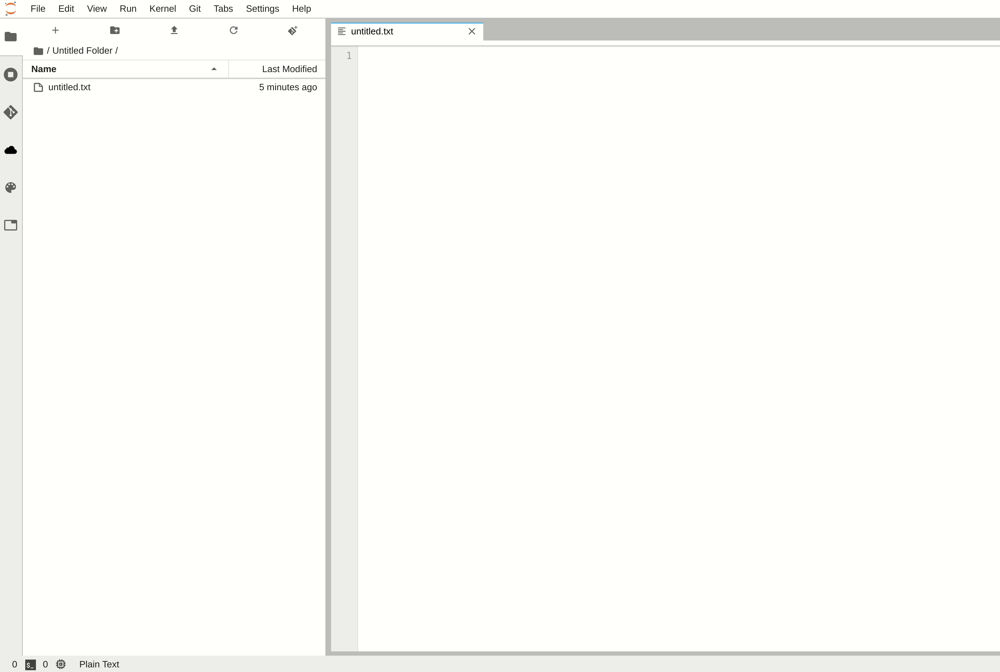
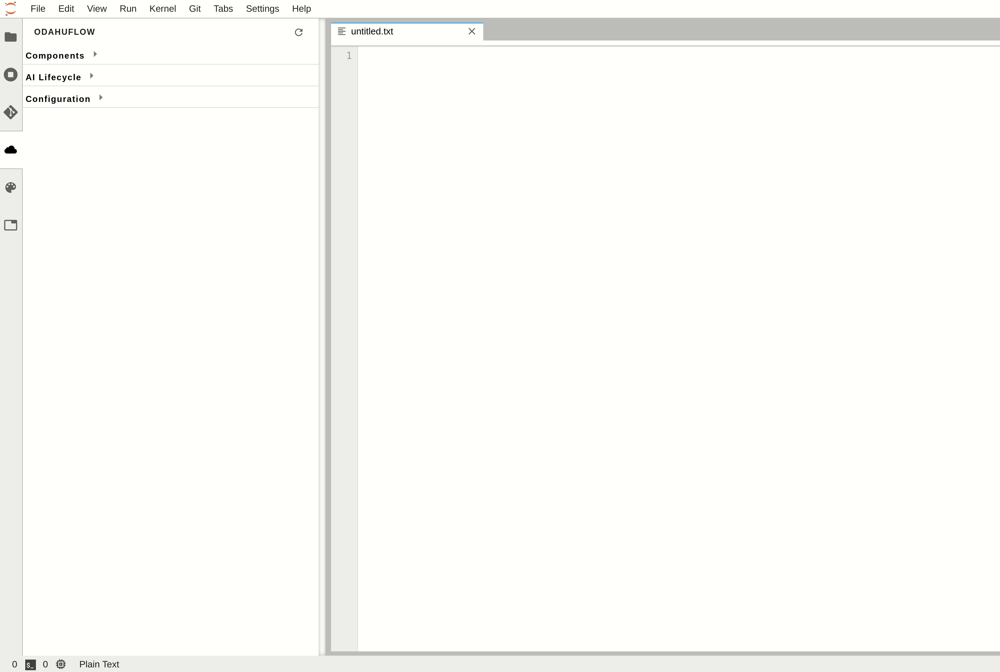

JupyterLab extension¶
Odahu-flow provides the JupyterLab extension that allows you to interact with an Odahu cluster from JupyterLab web-based IDEs.
Installation¶
Prerequisites:
- Python 3.6 or higher
- Jupyterlab GUI
- Preferable to use Google Chrome or Mozilla Firefox browsers
To install the extension, perform the following steps:
pip install odahu-flow-jupyterlab-plugin
jupyter serverextension enable --sys-prefix --py odahuflow.jupyterlab
jupyter labextension install odahu-flow-jupyterlab-plugin
Another option is prebuilt Jupyterlab Docker Image with the extension.
Configuration¶
The extension can be configured though the environment variables.
| Environment name | Default | Value example | Description |
|---|---|---|---|
| DEFAULT_API_ENDPOINT | https://odahu.company.com/ | Default URL to the Odahu-flow API server | |
| API_AUTH_ENABLED | true | true | Change the value to false if authorization is disabled on the Odahu-flow API server |
| ODAHUFLOWCTL_OAUTH_AUTH_URL | https://keycloak.company.org/auth/realms/master/protocol/openid-connect/auth | Keycloak authorization endpoint | |
| JUPYTER_REDIRECT_URL | http://localhost:8888 | JupyterLab external URL | |
| ODAHUFLOWCTL_OAUTH_CLIENT_ID | Oauth client ID | ||
| ODAHUFLOWCTL_OAUTH_CLIENT_SECRET | Oauth2 client secret |
To enable SSO, you should provide the following options:
- ODAHUFLOWCTL_OAUTH_AUTH_URL
- JUPYTER_REDIRECT_URL
- ODAHUFLOWCTL_OAUTH_CLIENT_SECRET
- ODAHUFLOWCTL_OAUTH_CLIENT_ID
Login¶
To authorize on an Odahu-flow API service in the Jupyterlab extension, you should perform the following steps:
- Copy and paste the Odahu-flow API service URL.
- Open an API server URL in a browser to get the token. Copy and paste this token in the login form.
Usage¶
Below we consider all views of the JupyterLab extension.
Templates¶
The extension provides predefined list of API file templates. You can create a file from a template.
Main view¶
The main view contains all Odahu-flow entities. You can view or delete them.
Log viewer¶
For troubleshooting, you can get access to the training, packaging or deployment logs. If the job is running then logs will be updated in runtime.

Submit resources¶
You can create any Odahu-flow entities from the extension.
The button Submit only appears in the context menu when file ends with .yaml or json.